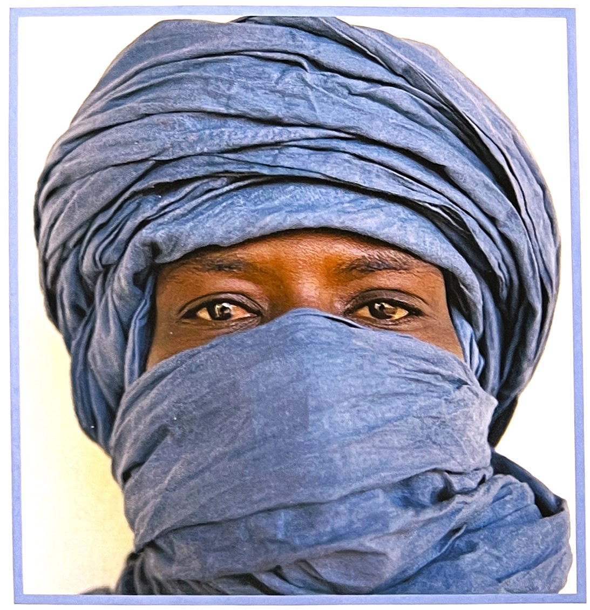
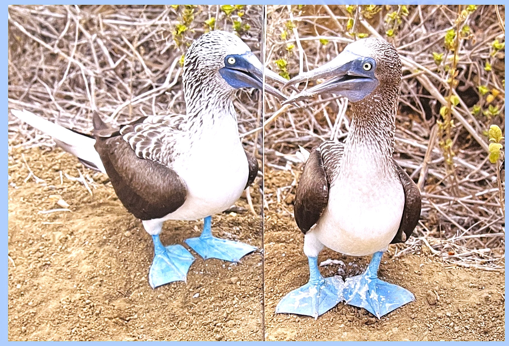
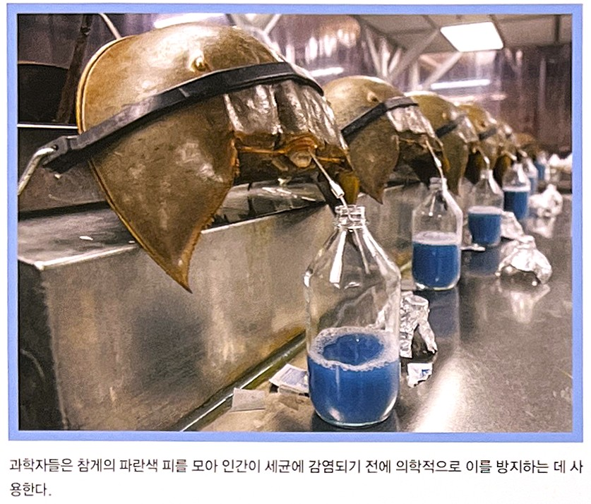
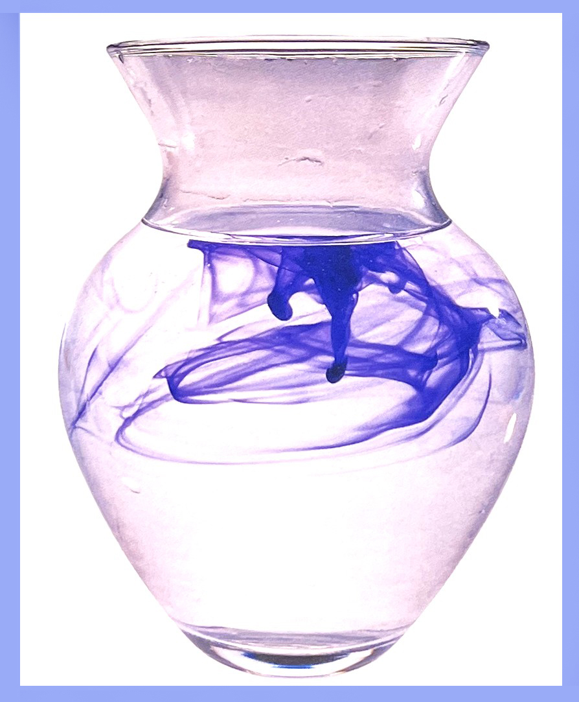

북아프리카의 투아레그 족은 파란색, 아니 정확히 말하자면 남색에 깊은 애정을 갖고 있었다. 다른 이웃 이슬람 국가들과 달리 투아레그 족은 머리에 'tagelmousts'라는 터번을 둘러 눈을 제외한 모든 곳을 가렸다. 남자아이는 성인으로 전환되는 과도기라는 것을 알리는 예식 중에 생애 최초로 이 터번을 쓰게 된다.
부자아거나 신분이 높은 남자의 경우 터번의 색상은 확실히 파란색일 것이다. 남색이 진할수록, 그리고 천의 광택이 강할수록 터번을 착용한 자가 높은 위치에 있다는 것을 의미한다.
남색은 식물을 원료로 한 염료인데, 수세기 동안 남색 염료를 사용해 온 투아레그 족과 서아프리카 다른 지역에서 부의 상징으로 이용되었다.
남색 염료로 만든 터번을 쓴 투아레그족 남성
구애 중인 푸른발의 부비새
과학자들은 참게의 파란색 피를 모아 인간이 세균에 감염이 되기전에 이를 방지하는데 사용한다. 남색의 심리학[2]
남색 기질을 갖고 있는 사람들은 진실을 갈구하는 열정을 갖춘 까닭에 원기왕성하며 힘이 세다. 이들은 모든 일을 ‘모 아니면 도’라고 생각한다. 이들에게 두 극단 외에는 없다. 순수한 사상가이기도 한 이들이 두 번째로 중요한 특징을 꼽으라면 경건함을 들 수 있다.
이들은 명백히 알 수 있는 것 너머에 존재하는 것도 감지할 수 있으며, 잘 보이지 않는 깊이도 측량할 수 있다. 이들은 영적인 숙련을 간절히 원하며, 과학과 종교를 조화시키는 재능을 갖추고 있다.
남색은 다른 영역을 넘어가는 문지방이다. 남색을 통해 새로운 영역으로 들어갈 수 있다.
[참고문헌]
[1] 컬러, 그 비밀스러운 언어 COLOR, 조앤 액스터트, 아리엘 엑스터트, 신기라 옮김, 시그마 북스, 2014.9.10.
[2] 몸과 마음을 치료하는 색채, 릴리안 베르너 본즈, 번역 한창환, 도서출판 국제, 2008.1.10.
....
....
....